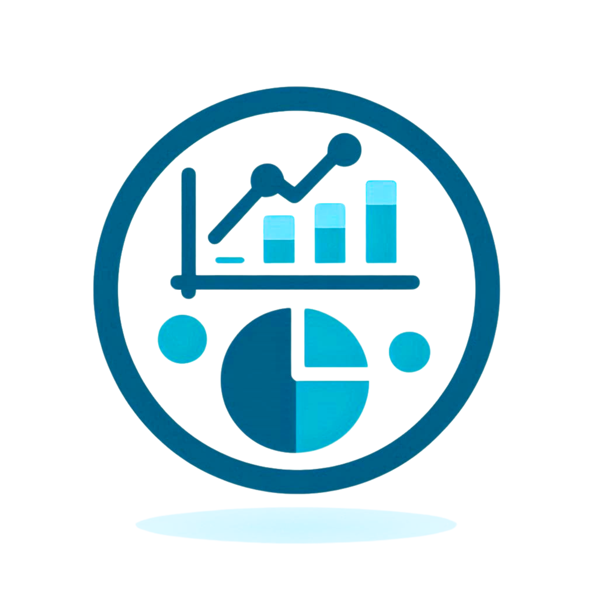
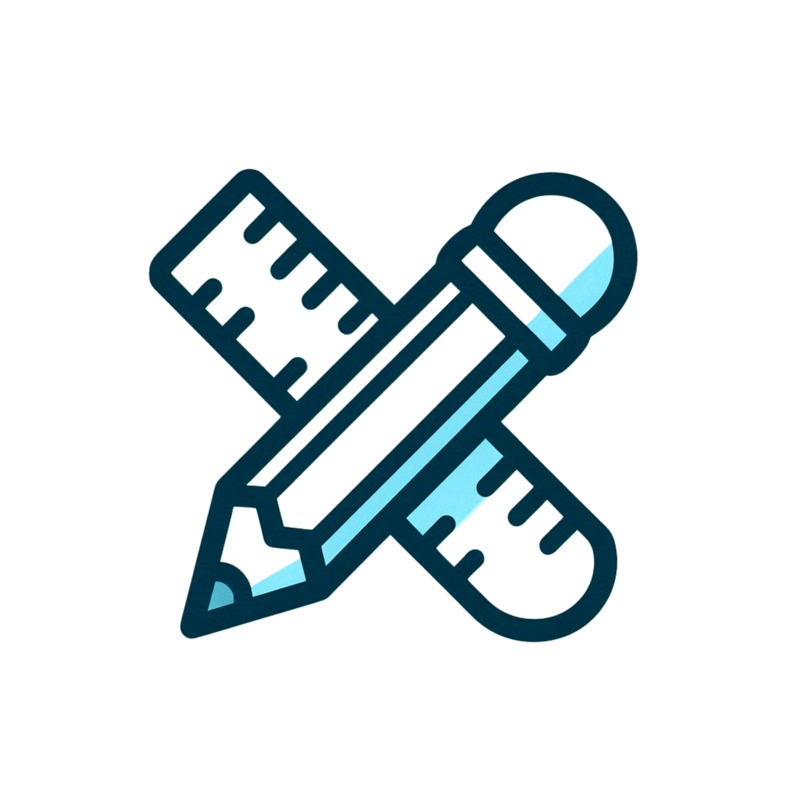

Hello, There
Daffa Fazly Rashidan
I’m a Data Scientist
Skills & Expertise
-  Data Analysis
- Machine Learning
-  UI/UX Design
 Python Programming
Python Programming
About Me
Hello! I'm Daffa Fazly Rashidan, a passionate Data Scientist from Universitas Negeri Surabaya. With expertise in data analysis, machine learning, and a keen interest in UI/UX design, I strive to uncover valuable insights and solve complex problems. I enjoy working with diverse datasets to drive data-informed decision-making and creating user-friendly interfaces to enhance user experience. My goal is to contribute to impactful projects and continuously improve my skills in the ever-evolving field of data science.
Projects

Analisis Sentimen Pemilu
Support Vector Machine (SVM) yang dioptimalkan dengan algoritma genetika
untuk menganalisis sentimen di Twitter terkait bakal calon presiden Pemilihan Presiden 2024

Redesign The Siakadu Application Interface
Penambahan fitur baru dan perubahan desain telah meningkatkan
efektivitas, efisiensi, dan kepuasan pengguna.

Data Visualization Dashboard
This project involved creating an interactive data visualization dashboard using Tableau, showcasing sales and performance data from a retail business.
View Dashboard
Python Web Scraper for Market Analysis
Developed a web scraper using Python's BeautifulSoup and Requests libraries to collect market data from e-commerce websites and analyze product trends.
View on GitHub